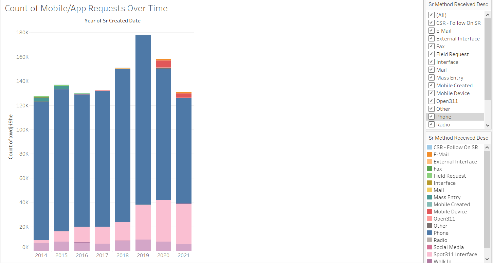
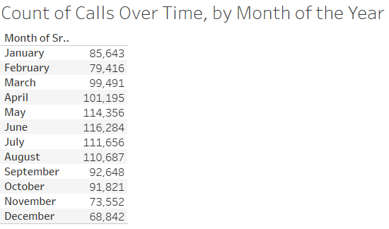

Learn more about the background for this project
Purpose:
As Austin continues to grow, the staffing and resource requirements of the City of Austin grow as well. We wanted to be able to get a better understanding of how the City’s resources are being used in answering calls. Our goal was to be able to predict the expected time needed to complete incoming calls. With the hope is to allow for better allocation of city resources using our insights.
Questions to Answer
The main questions we sought to answer in the EDA phase were:
Calls by Year
Calls by Month
Calls by Time of Day
Change in Request Submission Methods
Over the past 8 years, Austin has implemented new ways for citizens to make 311 requests.
This includes now being able to submit requests online over the phone or via 311 app for smarthphones.
Seasonality in Call Volume by Month
